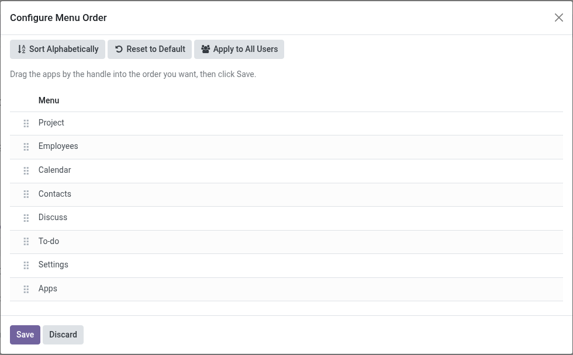
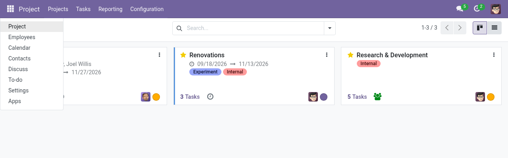

Everyone uses different apps. Let each user put the apps they open most at the top of the app menu, without changing it for anyone else.
Odoo 17.0 Free · LGPL-3

Configure Menu Order: drag the apps by the handle, then save.
Each user drags the apps into the order they want; other users keep theirs.
Regular users change their order from their own Preferences.
An administrator can apply their order to all users; new users start with it.
One click sorts the apps alphabetically or puts back the default order.

After Save: the app menu follows your order, and Odoo opens in your first app.
Free and open source (LGPL-3) by Paulius Gaizauskas · Questions or bugs: GitHub issues